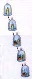
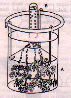
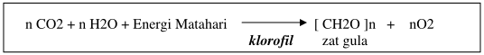
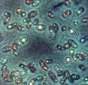
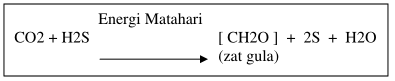
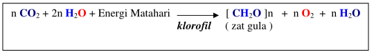

Percobaan Fotosintesis
Percobaan Fotosintesis
Usaha untuk memahami fotosintesis telah dilakukan sejak lama oleh para ilmuwan. Awalnya, seorang ahli kimia Inggris bernama Joseph Priestley (1772) menunjukkan bahwa tumbuhan mengeluarkan suatu gas yang membuat api lilin dapat menyala walaupun dalam tabung gelas yang tertutup. Coba simak prinsip percobaan yang dilakukannya pada Gambar 1.
 Gambar 1 Prinsip dasar percobaan J. Priestley
Dalam sungkup tabung gelas tanpa tanaman, api lilin yang dinyalakan cepat padam. Namun setelah ke dalamnya disusupkan tanaman, pada beberapa hari kemudian ternyata lilin dapat dinyalakan lagi. Lilin tetap menyala selama “gas” dari tanaman itu masih ada. Pada waktu itu, Dia belum tahu bahwa gas itu adalah oksigen. Prinsip dasar percobaannya dapat digambarkan pada Gambar 1
Dua ratus tahun kemudian, banyak peneliti tertarik untuk ikut menggali lebih
lanjut dari temuan Priestley tersebut. Jan Ingenhousz (1779), ahli fisiologi dari
German melakukan eksperimen dengan menggunakan tumbuhan air (Hydrila
verticilata). Dari percobaannya ditunjukkan tiga hal penting, meliputi :
- Gas yang dikeluarkan oleh tumbuhan itu ternyata adalah O2
- Cahaya matahari dibutuhkan untuk proses tersebut
- Bagian yang berhijau daun saja yang mengeluarkan O2
- Fotosintesis menggunakan energi matahari untuk menyusun zat gula sederhana.
- Zat gula disusun dari bahan dasar yaitu berupa H2O dan CO2.
- Fotosintesis menghasilkan bahan sisa berupa O2 dan H2O.
- Fotosintesis hanya dapat dilakukan oleh tumbuhan dan beberapa jenis bakteri.

Gambar 2 Percobaan Ingenhousz
Seorang ahli botani dari Swiss, Jean Senebier menemukan bahwa CO2 juga dibutuhkan untuk fotosintesis. Peneliti lain, ahli kimia dan ahli fisiologi Swiss yaitu Nicholas de Saussure (1804) menunjukkan bahwa tanaman tumbuh dari air dan CO2 yang diserapnya. Sachs (1860) menunjukkan bahwa fotosintesis menghasilkan zat gula atau karbohidrat yang disebut amilum. Berdasar temuan-temuan itu maka pemahaman tentang fotosintesis menjadi semakin lengkap. Fotosintesis kemudian dirumuskan dalam persamaan reaksi kimia sbb :

Darimanakah gas O2 yang dilepaskan itu ? Semula orang mengira bahwa O2 yang dikeluarkan adalah berasal dari pemecahan gas CO2. Van Niel adalah orang pertama yang menyatakan bahwa O2 itu berasal dari pemecahan air. Hal itu didasarkan dari hasil temuannya tentang fotosintesis bakteri Sulfur (Gambar 3).

Gambar 3 Bakteri Sulfur
Dengan energi matahari, bakteri Sulfur ternyata juga mampu menyusun zat gula dari CO2 dan gas belerang (H2S), bukan dengan air (H2O) seperti pada tumbuhan. Bakteri ini melepaskan S, yang tentu berasal dari pemecahan H2S. Persamaan reaksinya dinyatakan sbb :

Senada dengan hal itu, maka Van Niel menduga bahwa O2 yang dilepaskan pada fotosintesis tumbuhan adalah berasal dari pemecahan air (H2O).
Tahun 1941, Ruben dan Kamen melakukan percobaan fotosintesis dengan menggunakan air bertanda. Pada air tersebut, komponen O-nya diberi tanda yang mudah dikenali dengan alat tertentu. Dengan cara ini, Dia berhasil membuktikan bahwa “gas” yang dilepaskan itu adalah O2 yang bertanda. Oksigen itu tentu berasal dari pemecahan air bertanda. Pemecahan air dengan energi cahaya yang diserap oleh sel-sel daun yang berfotosintesis ini disebut fotolisis. Dengan demikian, persamaan fotosintesis yang lengkap adalah sbb :

Berdasar uraian di atas dapat kita tarik beberapa pengertian :
Fotosintesis menyusun zat gula dari air dan karbon dioksida (CO2), sehingga sering disebut pula asimilasi karbon.